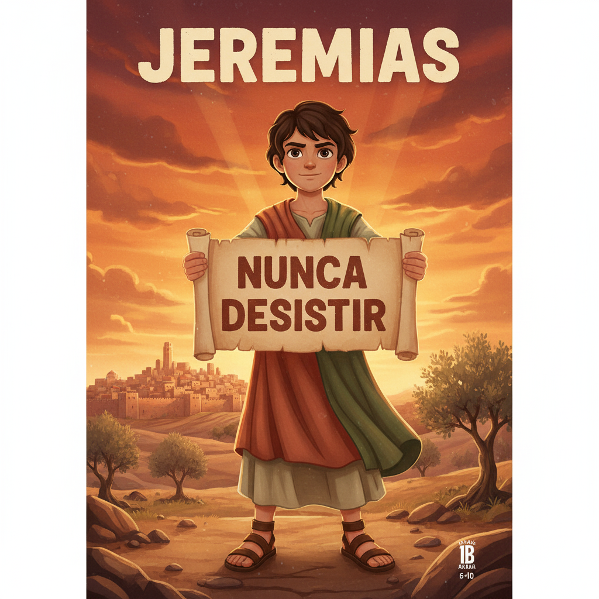
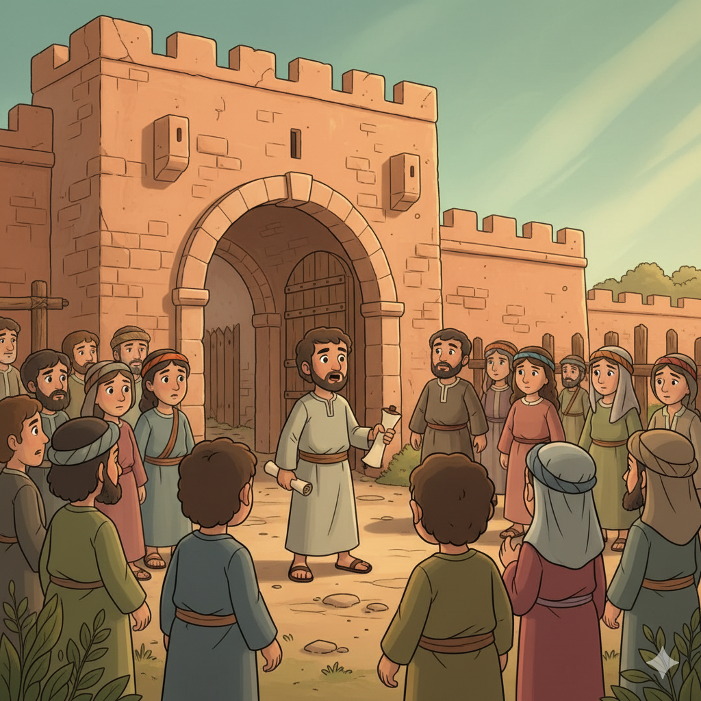
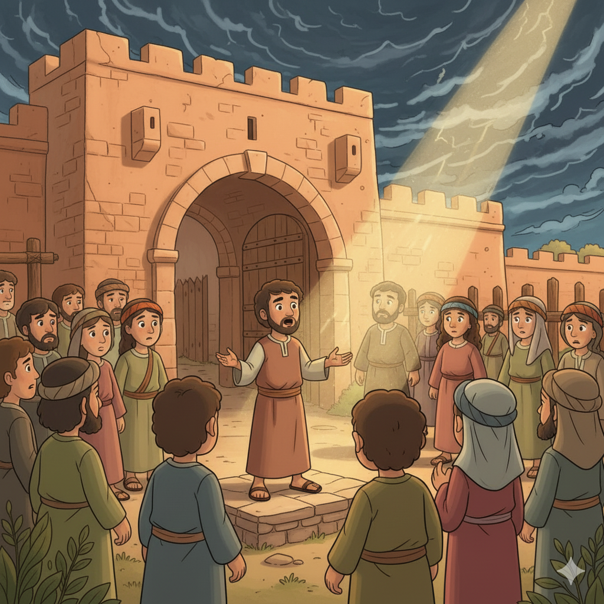
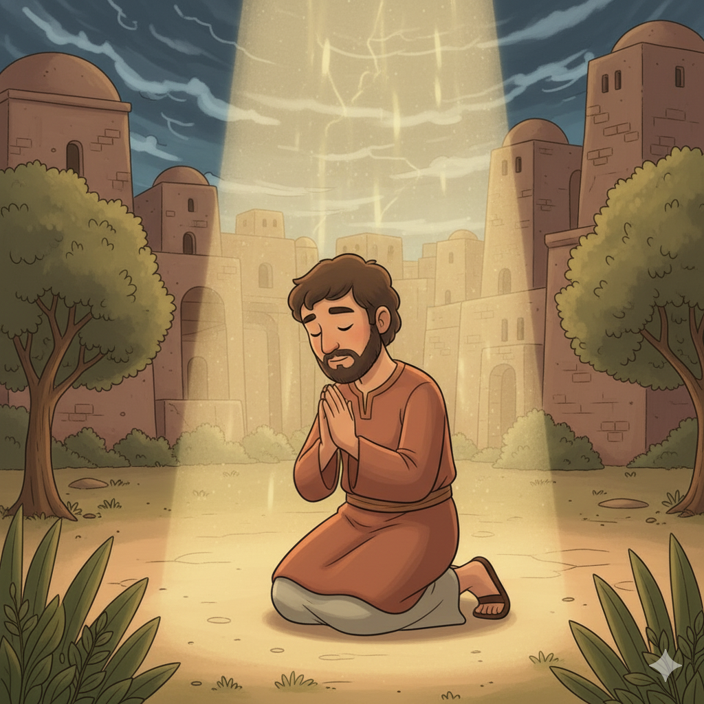
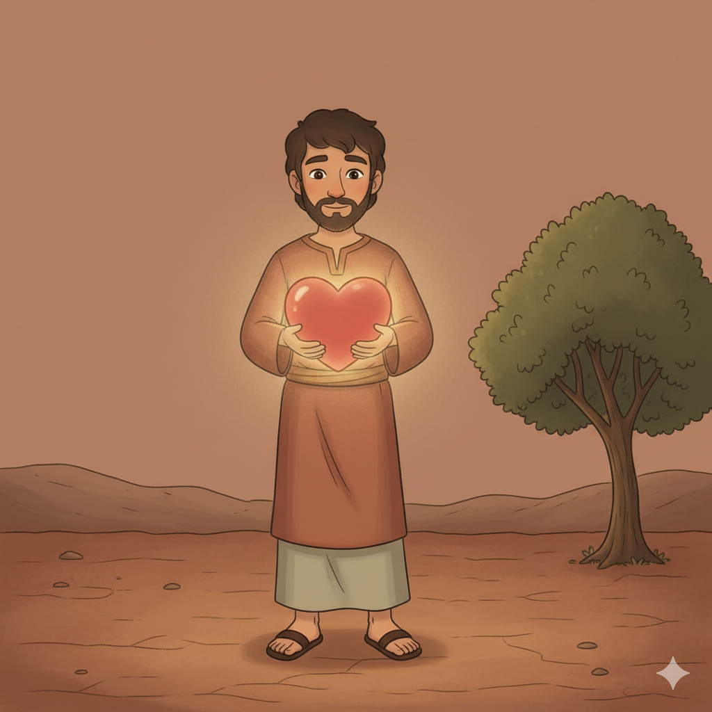
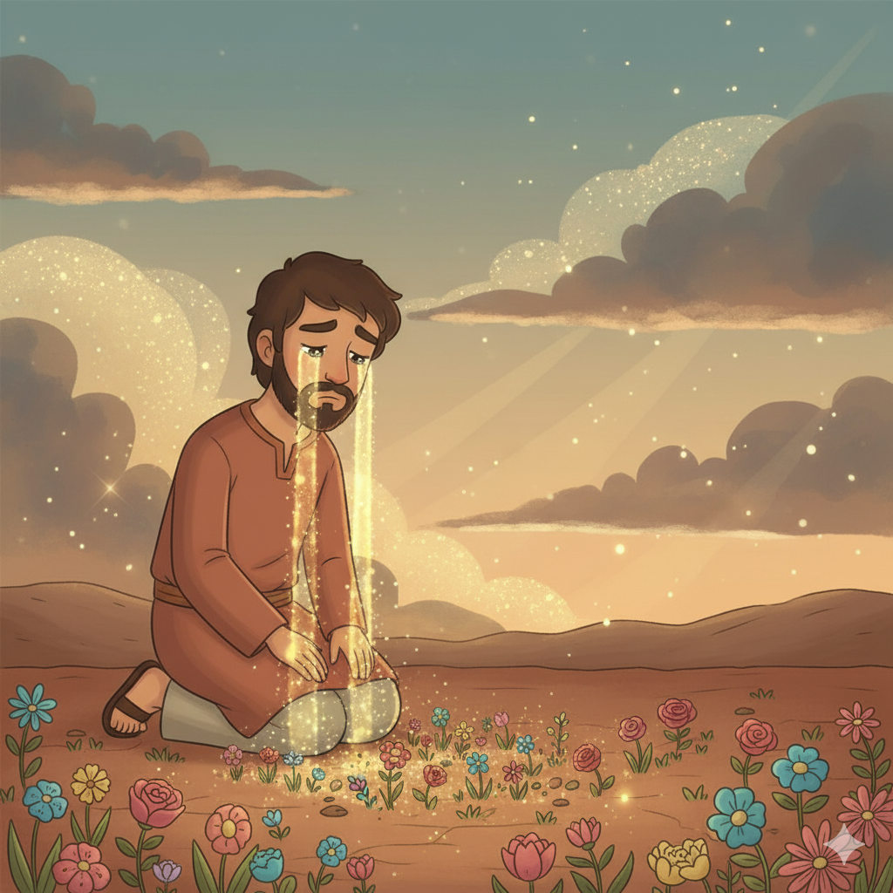

O Profeta do Coração Partido — Um Resumo Visual para Crianças
Jeremias era jovem e se sentiu incapaz,
"Não sei falar!", disse com a voz capaz.
Mas Deus respondeu com amor e com calma:
"Antes de nascer, já te escolhi, minha alma!"
Deus não olha para a idade ou o que você sabe,
Ele já tem um plano que ninguém desabe!
📖 Jeremias 1:5 — "Antes que te formasse no ventre materno, te conheci; antes que saísses da madre, te santifiquei."
Jeremias quis calar — mas não conseguia,
A Palavra de Deus no coração ardia!
"Como fogo nos ossos" — ele não podia mais,
Tinha que falar, mesmo sem ter paz!
Quando Deus coloca algo no seu coração,
Não tem como ficar calado — é missão!
📖 Jeremias 20:9 — "Havia no meu coração como um fogo ardente, encerrado nos meus ossos; esgotei-me tentando retê-lo, e não pude."
No meio de tanta tristeza e destruição,
Deus falou ao povo com grande consolação:
"Tenho planos de paz, não de calamidade,
Para dar-lhes futuro e uma nova realidade!"
Mesmo no pior momento da sua vida,
O plano de Deus para você é sempre de saída!
📖 Jeremias 29:11 — "Porque eu bem sei os planos que tenho a vosso respeito, planos de paz e não de mal, para vos dar um futuro e uma esperança."
🌟
"Porque eu bem sei os planos que tenho a vosso respeito... planos de paz e não de mal, para vos dar um futuro e uma esperança."
Jeremias 29:11
Jeremias escreveu isso para o povo exilado na Babilônia — longe de casa, sem esperança. E Deus disse: "Eu tenho um plano para vocês — de paz, não de destruição!" Esse versículo vale para você também, em qualquer situação!
Chamado ainda jovem, Jeremias profetizou por mais de 40 anos — sem ver nenhuma conversão. Foi ridicularizado, espancado, jogado num poço e preso. Mesmo assim, nunca parou. Seu segredo: a Palavra de Deus era como fogo dentro dele que não conseguia apagar!
📖 Leia na Bíblia — Jeremias 1:5
"Antes que te formasse no ventre materno, te conheci; antes que saísses da madre, te santifiquei; às nações te dei por profeta."
Baruque era o escrivão de Jeremias — era ele quem escrevia as profecias em rolos de couro. Quando o rei Joaquim queimou o rolo (literalmente jogou no fogo!), Jeremias ditou tudo de novo para Baruque. A amizade fiel é um presente de Deus!
📖 Leia na Bíblia — Jeremias 36:4
"Então Jeremias chamou a Baruque, filho de Nerias; e Baruque escreveu, da boca de Jeremias, todas as palavras do Senhor."
Zedequias era o último rei de Judá. Ele chamava Jeremias às escondidas para ouvir as profecias — mas tinha medo de obedecer. Resultado: Jerusalém foi destruída e ele foi levado preso para a Babilônia. Ouvir sem obedecer não adianta!
📖 Leia na Bíblia — Jeremias 38:19
"Respondeu o rei Zedequias a Jeremias: Tenho medo dos judeus que desertaram para os caldeus."


📖 Leia em casa!
Jeremias tem 52 capítulos — é o livro mais longo da Bíblia em número de palavras! Cap. 29 e 31 têm as promessas mais lindas.
📢 O Chamado e os Avisos (Cap. 1–25)
Deus chama Jeremias jovem e o envia com avisos sérios: se o povo não se arrepender, a Babilônia vai destruir Jerusalém. Por 40 anos Jeremias grita, chora e suplica — mas ninguém ouve. Fiel mesmo sem resultados visíveis!
📖 Jeremias 7:13 — "Eu falei, e não ouvis tes; chamei, e não respondestes."
😢 O Sofrimento do Profeta (Cap. 26–45)
Jeremias é preso, espancado, jogado num poço com lama até afundar! Mas até no fundo do poço ele não renegou a mensagem. Um homem chamado Ebede-Meleque, com 30 ajudantes, o tirou com cordas — um momento de graça no meio do caos.
📖 Jeremias 20:9 — "Havia no meu coração como um fogo ardente, encerrado nos meus ossos."
🌱 A Nova Aliança e a Esperança (Cap. 30–33)
No meio da destruição, Deus revela algo revolucionário: uma Nova Aliança! Não escrita em pedra como a do Sinai, mas no coração de cada pessoa. Jeremias 31:31-33 é a maior profecia do NT no Antigo Testamento — cumprida em Jesus!
📖 Jeremias 31:33 — "Porei a minha lei no seu interior e a escreverei no seu coração; eu serei o seu Deus, e eles serão o meu povo."
Jeremias falou a verdade por 40 anos sem ninguém ouvir. Nenhuma conversão, nenhum aplauso — apenas perseguição. Mas ele não parou. Isso ensina que fidelidade a Deus não depende de resultados que conseguimos ver!
📖 Jeremias 1:8
"Não temas diante deles, porque eu estou contigo para te livrar, diz o Senhor."
Com os babilônios cercando a cidade, Deus pediu a Jeremias que comprasse um campo (Jr 32). Era um ato de fé absurdo! Mas Jeremias obedeceu — como sinal de que Deus restauraria Israel. Confiar em Deus no pior momento é fé real!
📖 Jeremias 32:17
"Ah! Senhor Deus! Tu fizeste os céus e a terra com grande poder... nada te é impossível."
Jeremias 31:31-33 profetiza a Nova Aliança escrita no coração — cumprida por Jesus na Santa Ceia (Lc 22:20: "Este cálice é a nova aliança no meu sangue"). E assim como Jeremias sofreu inocente, Jesus também sofreu — sendo o verdadeiro profeta rejeitado.


O propósito central de Jeremias era: voltai-vos a Deus com todo o coração! Não basta praticar rituais religiosos por fora — Deus quer transformação de dentro. Religion exterior sem coração não salva!
📖 Jeremias 4:4
"Circuncidai-vos ao Senhor e tirai o prepúcio do coração."
Mesmo no fracasso da Antiga Aliança (o povo sempre quebrava), Deus revelou através de Jeremias que viria uma Nova Aliança — não em tábuas de pedra, mas escrita no coração. Essa aliança foi inaugurada por Jesus!
📖 Jeremias 31:31
"Eis que dias vêm, diz o Senhor, em que farei nova aliança com a casa de Israel."
🌟 Lição Principal: Deus nunca desiste do Seu povo. Mesmo quando precisa corrigir, Ele já preparou planos de esperança e uma nova aliança escrita no coração!
📜 O rolo queimado e reescrito: O rei Joaquim jogou o rolo das profecias de Jeremias literalmente no fogo enquanto ouvia a leitura (Jr 36)! Jeremias então ditou tudo de novo para Baruque — com mais conteúdo ainda. A Palavra de Deus não pode ser destruída!
😢 O profeta que nunca casou: Deus pediu a Jeremias que não se casasse e não tivesse filhos (Jr 16:2) — como sinal profético do sofrimento que viria sobre o povo. Foi uma das missões mais solitárias da Bíblia!
🏺 O oleiro e o barro: Deus levou Jeremias à casa de um oleiro e disse: "Como o oleiro molda o barro, Eu moldo o meu povo." (Jr 18). Deus é o oleiro — e nós somos o barro em Suas mãos!

Converse com sua família, turma ou professor sobre essas perguntas!
👶
Deus disse a Jeremias: "Antes de te formar no ventre, te conheci!" O que significa para você saber que Deus te conhecia antes de você nascer? Como isso muda a forma de você enxergar sua própria vida?
🔥
Jeremias falou a verdade por 40 anos sem ninguém ouvir. Você já teve que dizer algo verdadeiro que era difícil ou que as pessoas não gostaram de ouvir? Como você se sentiu? O que te deu coragem?
🌟
Jer 29:11 diz que Deus tem planos de paz para nós. Tem algo na sua vida agora que parece sem saída ou assustador? Como você pode confiar que Deus tem um plano bom mesmo nessa situação?
Escolha um desafio (ou faça os três!) e seja um explorador da Bíblia!
📖
Leia os versículos 11 a 13 do capítulo 29. Depois leia Jeremias 1:4-8 — o chamado de Jeremias. O que essas passagens têm em comum? Compartilhe com alguém da família.
✍️
Escreva "Porque eu bem sei os planos que tenho a vosso respeito... planos de paz" e coloque em lugar visível. Quando surgir um medo ou preocupação, diga esse versículo em voz alta!
💌
Inspirado em Jer 29:11, escreva uma carta para o "você do futuro" — sobre seus sonhos, medos e o que você acredita que Deus tem para você. Guarde e releia daqui a um ano!
Trilho Kids | Desenvolvido com ❤️ para crianças © 2025